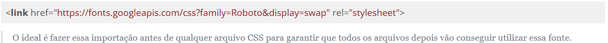
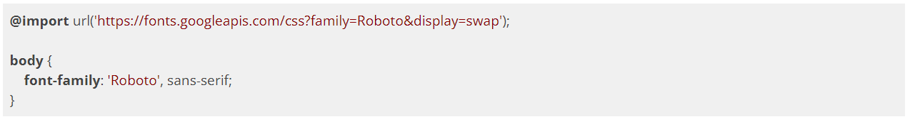
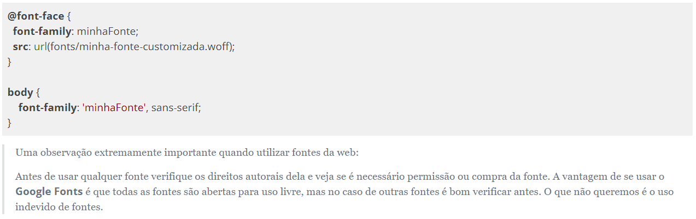

Estilizando o header da home
CSS Reset
Quando não especificamos nenhum estilo para nossos elementos do HTML, o navegador utiliza uma série de estilos padrão, que são diferentes em cada um dos navegadores. Em um momento mais avançado dos nossos projetos, poderemos enfrentar problemas com coisas que não tínhamos previsto; por exemplo, o espaçamento entre caracteres utilizado em determinado navegador pode fazer com que um texto que, pela nossa definição deveria aparecer em 4 linhas, apareça com 5, quebrando todo o nosso layout.
Para evitar esse tipo de interferência, alguns desenvolvedores e empresas criaram alguns estilos que chamamos de CSS Reset. A intenção é setar (definir) um valor básico para todas as características do CSS, sobrescrevendo totalmente os estilos padrão do navegador.
HTML5 Boilerplate
O HTML5 Boilerplate é um projeto que pretende fornecer um excelente ponto de partida para quem pretende desenvolver um novo projeto com HTML5. Uma série de técnicas para aumentar a compatibilidade da nova tecnologia com navegadores um pouco mais antigos estão presentes e o código é totalmente gratuito. Em seu arquivo "style.css", estão reunidas diversas técnicas de CSS Reset. Apesar de consistentes, algumas dessas técnicas são um pouco complexas, mas é um ponto de partida que podemos considerar.
https://html5boilerplate.com/
YUI3 CSS Reset
Criado pelos desenvolvedores front-end do Yahoo!, uma das referências na área, esse CSS Reset é composto de 3 arquivos distintos. O primeiro deles, chamado de Reset, simplesmente muda todos os valores possíveis para um valor padrão, onde até mesmo as tags <h1> e <small> passam a ser exibidas com o mesmo tamanho. O segundo arquivo é chamado de Base, onde algumas margens e dimensões dos elementos são padronizadas. O terceiro é chamado de Font, onde o tamanho dos tipos é definido para que tenhamos um visual consistente inclusive em diversos dispositivos móveis.
Eric Meyer CSS Reset
Há também o famoso CSS Reset de Eric Meyer, que pode ser obtido em http://meyerweb.com/eric/tools/css/reset/. É apenas um arquivo com tamanho bem reduzido.
Vale lembrar que o uso de cada reset varia conforme a necessidade. Alguns CSS Resets são mais agressivos do que outros, e também é importante saber que eles podem ser modificados para suas próprias necessidades. Existem pessoas que desenvolvem seus próprios CSS Resets e elas costumam compartilhar seus códigos em certos fórums voltados para HTML e CSS.
Fontes Próprias
É comum que páginas na web tenham tipografias que combinem com a sua estética e linguagem visual, também para a facilidade de leitura. Só que nem sempre os usuários possuem as fontes que queremos usar em nossas páginas. Para isso precisamos decidir em como fazer para que nossos usuários tenham acesso a essas fontes. Uma maneira super comum e fácil é usar o Google Fonts. Basta entrar no site https://fonts.google.com/, escolher uma tipografia e depois escolher como importar a fonte. A primeira maneira de se importar a fonte do Google Fonts é usando a tag e passar a referência para o Google Fonts. Não se preocupe que na hora de escolher uma fonte a própria Google dá o código pronto para você utilizar:

A outra maneira de importar é fazendo um @import no próprio arquivo CSS que você vai usar a fonte:

Outra maneira de importar fonte sem depender de serviços externos é importar o próprio arquivo de fonte no arquivo CSS que essa fonte será utilizada usando o @font-face:

Modularizando Componentes com CSS Isolados
Durante o desenvolvimento do projeto, principalmente na parte de planejamento, definimos diversas seções que vão englobar os diversos conteúdos de nossa página que podem ou não se repetir em outras páginas de nosso site. Podemos lidar com a situação de diversas maneiras:
CSS Geral com CSS Específico da Página
A abordagem de criar um CSS geral com um CSS específico da página é bem conhecida e muito utilizada no mercado. A idéia é criar um CSS que vai conter estilos que podem se repetir em diversas páginas, como por exemplo, tipografia, cores, tamanhos e até alguns componentes, e depois criar um CSS que vai conter estilos específicos daquela página. Como tudo na vida, existem vantagens e desvantagens dessa abordagem.
Vantagens:
Só é necessário a importação de um arquivo CSS para que a página já tenha um estilo padrão.
Como todas as classes de estilos estão em um lugar só, podemos escrever o html já colocando os nomes de classes que precisamos. Quase como um framework.
Desvantagens:
Todas as páginas terão de carregar um arquivo de estilos gigantesco independete se vão usar todas as classes ou não, o que pode impactar performance.
Dependendo do tamanho do arquivo geral pode ser muito complexo encontrar seletores que queremos usar.
Se por algum motivo queremos usar algo que era para ser exclusivo de uma página em outra página, teremos de fazer a "portabilidade" para o arquivo geral o que pode bagunçar o arquivo geral.
Manutenção pode ser complexo dependendo do tamanho do arquivo.
Um CSS Para Cada Componente Da Página
Essa abordagem também é bastante utilizada no mercado só que ela é mais utilizada em projetos com o uso de frameworks (React, Angular) e pré processadores de CSS (SASS). Nessa abordagem cada seção ou componente da página tem um CSS exclusivo.
Vantagens:
Como cada componente tem seu próprio CSS só é necessário importar os componentes que precisamos usar em cada página, evitando importar estilos desnecessários.
Organização e manutenção fica menos complicada porque é mais claro saber exatamente qual arquivo trabalhar.
Desvantagens:
Precisamos importar um arquivo CSS diferente para cada componente que queremos usar que pode gerar linhas de imports gigantescas.